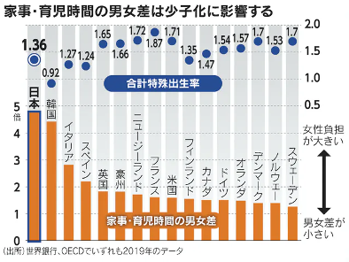

単回帰分析
回帰分析の目的で述べたとおり, 本稿ではまず関係の定量化と母集団への推測を扱います. 説明変数が 1 つの単回帰分析を, 実際のデータで行ってみます. 事例として, 男性の家事・育児時間と出生率の関係を示した報道の図を取り上げ, その分析にどのような問題があるかを考えます.
男性の家事・育児時間の割合が 1 パーセントポイント高い国では, 合計特殊出生率は平均でどれだけ違うでしょうか. 国ごとの値を散布図にし, 単回帰直線の傾きでこの関係を表します.
出生率と時間配分の表の結合
日本経済新聞は, 家事・育児時間の男女差と少子化の関係を報じました. 記事の図は 16 か国を対象に, 国ごとに家事・育児時間の男女差を棒で, 合計特殊出生率を点で示しています.

出典 日本経済新聞, 男性の育児・家事時間と出生率についての記事
図に載った 16 か国はどのように選ばれたのでしょうか. 別の国を加えると, 2 つの指標の関係はどう見えるでしょうか. 図の横軸には国名が並ぶので, 各国の値を読み取れます. 2 つの量の関係を見るには, 片方の量を横軸に, もう片方を縦軸に置きます.
内閣府の図は, 横軸を男性の家事・育児等労働時間割合とし, 合計特殊出生率との関係を散布図と回帰直線で示しています. 直線の傾きは, 図に含まれる国どうしで, 男性の家事・育児等労働時間割合が違うときの出生率の平均的な差を表します.

出典 内閣府 政策統括官（経済社会システム担当）第４回会議資料「選択する未来2.0」資料２ 参考資料②(事務局資料)
内閣府の図には回帰式 y=0.0132x+1.2027 と決定係数 R^2=0.2966 が記載されています. 対象は 18 か国で, トルコは含まれません. 国名に添えた年は国によって異なります.
対象国を変えても同じ関係が見えるかを調べるため, 元の表に戻ります.
OECD Family Database から SF2.1 (Fertility rates) と LMF2.5 (Time used for work, care and daily household chores) の Excel ファイルをダウンロードし, それぞれから下の配布表を作りました.
どちらの表でも Country は国名です. SF2.1 の合計特殊出生率 (Fertility) は, 女性 1 人あたりの子どもの数です.
LMF2.5 の時間配分からは, 男性の有償労働 (Paid), 無償の家事 (Unpaid), 育児などのケア (Care) に使う時間を取り出しました.
配布表は, 2019 年の出生率と, 国によって 1999 年から 2013 年の調査に基づく時間配分を収めています. 日本経済新聞の図は 2019 年のデータと注記しています. 配布表で求めた傾きと決定係数を内閣府の図と比べるときも, それぞれが対象とした国と調査年を確かめます.
内閣府のグラフに合わせて, 男性が 3 項目に使う時間の合計を分母とし, 家事・育児に使う割合を百分率で表します. 計算式は 100 \times (\mathrm{Unpaid}+\mathrm{Care})/(\mathrm{Paid}+\mathrm{Unpaid}+\mathrm{Care}) です. この割合を x とし, 同じ国の出生率と組み合わせます.
fertility_rates.csv と
time_used.csv をダウンロードし, コードと同じフォルダに置いてください.
コードはそのフォルダから実行してください.
必要な Python パッケージは pandas, numpy, matplotlib, statsmodels, adjustText です.
import matplotlib.pyplot as plt
import numpy as np
import pandas as pd
import statsmodels.api as sm
from adjustText import adjust_text
fertility = pd.read_csv("fertility_rates.csv")
time_use = pd.read_csv("time_used.csv")
print(fertility.head(2).to_string(index=False))
print(time_use.head(2).to_string(index=False))Country Fertility
Korea 0.92
Spain 1.23
Country Paid Unpaid Care
Australia 20.3 10.5 2.2
Austria 22.5 9.4 1.5配布表を読み込んだら, 男性の家事・育児時間の割合を計算し, r に格納します.
unpaid_and_care = time_use["Unpaid"] + time_use["Care"]
total_work = time_use["Paid"] + unpaid_and_care
time_use["r"] = 100 * unpaid_and_care / total_work出生率と家事・育児時間の割合が両方そろうのはどの国でしょうか. 結合した表で確かめます.
出生率の表ではトルコが Türkiye, 時間配分の表では Turkey と表記されています.
出生率の表の表記を Turkey にそろえてから, Country をキーに結合します.
validate="one_to_one" を指定すると, 同じキーが片方の表に複数回現れたときにエラーになります.
外部結合 (how="outer") では, 片方の表にしかない行も残ります.
indicator=True で追加した _merge 列で, それぞれの行がどちらの表にあったかを確かめます.
fertility["Country"] = fertility["Country"].replace({"Türkiye": "Turkey"})
joined = fertility.merge(
time_use[["Country", "r"]],
on="Country",
how="outer",
validate="one_to_one",
indicator=True,
)
unmatched = joined.loc[joined["_merge"] != "both", ["Country", "_merge"]]
print(unmatched.to_string(index=False)) Country _merge
Chile left_only
Colombia left_only
Costa Rica left_only
Czech Republic left_only
Denmark left_only
Greece left_only
Hungary left_only
Iceland left_only
Ireland left_only
Israel left_only
Lithuania left_only
Luxembourg left_only
Netherlands left_only
OECD average left_only
Portugal left_only
Slovak Republic left_only
Switzerland left_onlyleft_only の行には出生率だけがあります.
今回の表には, 時間配分の表にだけある right_only の行はありません.
both の行を残し, dropna() で数値が欠けている行を除きます.
両方の値がそろったのは 22 か国です.
内閣府の図にメキシコが含まれないので, メキシコを外した 21 か国に直線を当てはめます.
結合後の 21 か国にはトルコが入ります. 内閣府の図に載るオランダとデンマークは, 2 つの表を結合すると left_only になります.
メキシコを加えた場合は Exercise REG-SIMPLE-1 で確かめます.
matched = joined.loc[joined["_merge"] == "both", ["Country", "Fertility", "r"]]
countries = matched.set_index("Country").dropna()
analysis = countries.drop(index="Mexico")
print(f"Matched: {len(countries)}, used in the main example: {len(analysis)}")
print(analysis.head(2).to_string(float_format="{:.2f}".format))Matched: 22, used in the main example: 21
Fertility r
Country
Australia 1.67 38.48
Austria 1.46 32.63